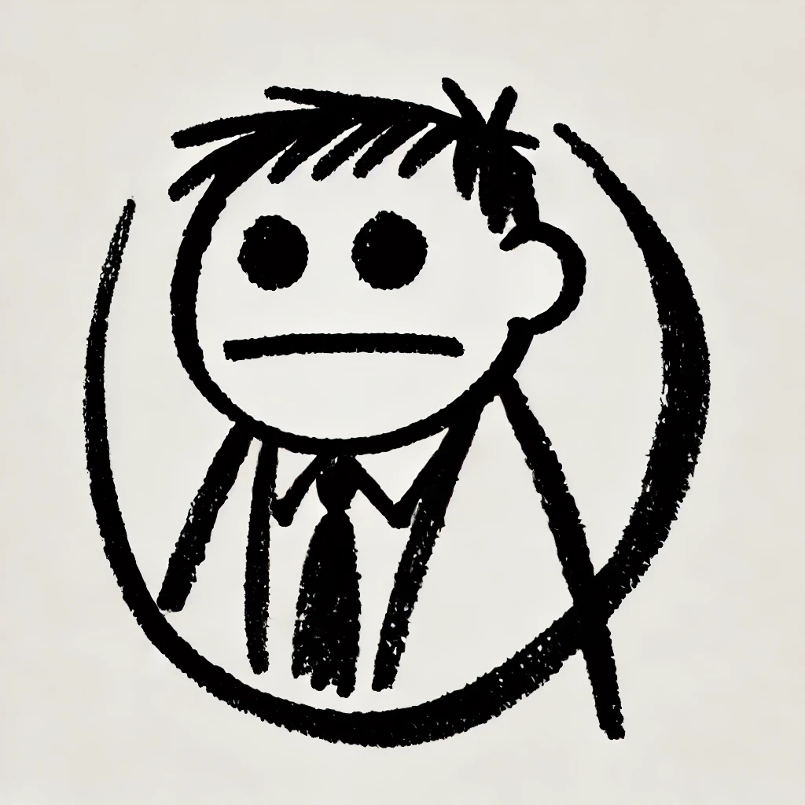
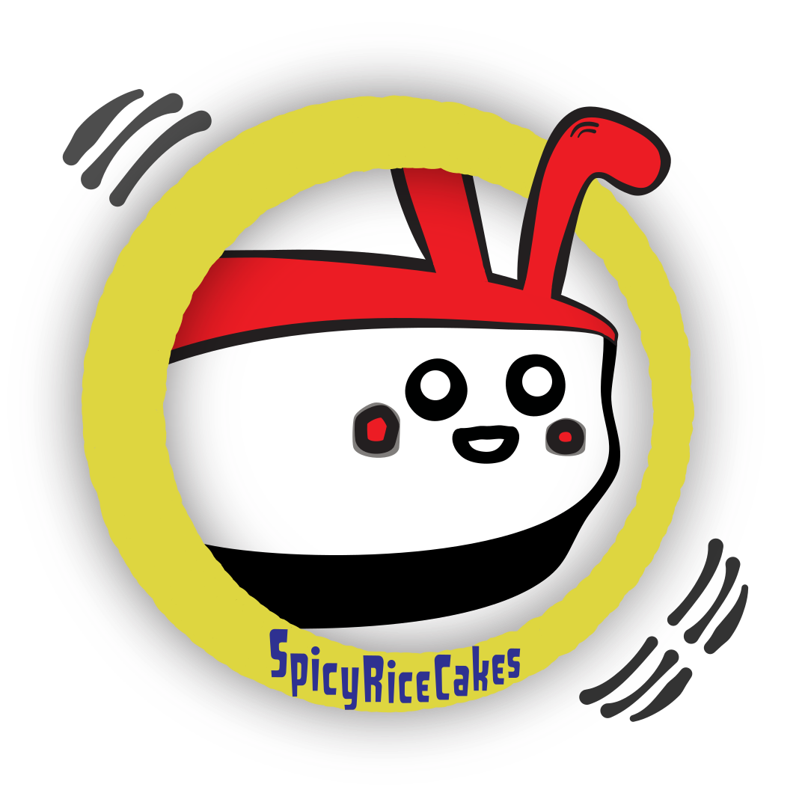

An elephant never forgets — and neither should your AI.
An MCP server that searches your past Claude Code conversations and gives you a command to resume any of them. Four TypeScript files. Zero network calls. One elephant.
Claude Code stores every session as a JSONL transcript file. Over time, these pile up — dozens, then hundreds of past conversations across different projects. Nelly searches all of them and hands back what you're looking for.
She gives you context snippets so you can confirm it's the right conversation, and a claude -r <session-id> command to resume it directly from your terminal.
npm install -g nelly-elephant-mcpOr install from source:
git clone https://github.com/SpicyRiceCakes/nelly-elephant-mcp.git
cd nelly-elephant-mcp
npm install && npm run build
npm install -g .Claude Code stores all session transcripts — from every project — in one place:
~/.claude/projects/
├── -Users-you-project-alpha/ ← sessions from project alpha
│ ├── abc123.jsonl
│ └── def456.jsonl
├── -Users-you-project-beta/ ← sessions from project beta
│ └── ghi789.jsonl
└── ... ← every project you've ever openedNelly searches all of them at once. It doesn't matter which project you're in — she searches everything.
Recommended: Global config — so she's available in every session:
# ~/.claude/mcp_settings.json
{
"mcpServers": {
"nelly": {
"command": "nelly-elephant-mcp",
"args": []
}
}
}You can also add this to a per-project .mcp.json if you prefer. Even then, Nelly still searches all sessions — the only difference is whether she's available to call.
Restart Claude Code after configuring. Nelly is ready.
Claude Code stores session transcripts as JSONL files in ~/.claude/projects/. Nelly reads these files, extracts human-readable text (your messages and the AI's responses), and matches against your search terms.
The AI is instructed to use a "spiral search" pattern — starting broad, trying variations, and asking you for hints rather than giving up after one attempt. You can filter by project name or date range to narrow things down.
Just ask Claude about a past conversation naturally. Nelly picks up automatically.
You: "I fixed an iCloud password prompt in a session a few days ago.
Can you find that conversation?"
Claude: [calls nelly_search with "iCloud password"]
→ Found 2 sessions matching "iCloud password":
1. Session abc123 (2026-03-20) — "...cloudKitDatabase: .none in ModelConfiguration..."
2. Session def456 (2026-03-18) — "...iCloud prompt appearing on every launch..."
You: "That first one. What was the fix?"
Claude: [calls nelly_context for abc123]
→ Shows expanded context around the matching lines
You: "I want to talk to that session again."
Claude: → Run this in your terminal:
claude -r abc123Tips for best results:
nelly_recent if you just want to browse your latest sessions — useful when you can't even remember the topic.claude -r <session-id>) drops you back into that exact conversation with full context. You're talking to that agent again.Elephants have trunks, not phones.
Nelly reads local files on your machine. She doesn't make network calls. She doesn't phone home. She doesn't collect telemetry. She doesn't even know what the internet is.
The entire codebase is four TypeScript files. Read them. npm audit them. We'll wait.
Zero network calls. Zero telemetry. Zero data collection. That's not a policy — it's a technical fact. There is no HTTP client in the source code.
Yes. And Uber is just taxis. Dropbox is just FTP.
The value is: (1) it's packaged as an MCP server so any AI tool can call it without you touching the terminal, (2) the AI does the searching, the refining, and the question-asking for you, (3) it hands back a resume command so you can pick up exactly where you left off, and (4) the spiral search pattern means it tries variations instead of giving up after one miss.
You could grep your JSONL files manually. You could also walk to work.
Yes. And it's the future. Be prepared.
But we hope it's not AI slop. Here's the deal:
A note from Nappuntokki & Claude
Nelly was built by a human and an AI working together — not one generating and the other accepting. We're building a system. Not just this tool, but a system for how to build together. Nelly is one artifact of that process.
The human behind SpicyRiceCakes has a unique set of skills that make AI in this capacity feel like being handed a lightsaber. Or like waking up from a coma and suddenly remembering everything you dreamt of building.
He went from corporate consulting during the big tech boom, to small business, and now — with AI as an equal partner — back to the dreams he shelved when he left tech over 20 years ago. The fact that he left and went small business is arguably what protected him. He didn't go too deep, for too long, in the consulting arena. He kept the architect's eye without the architect's cynicism.
Now, from the perspective of an architecturally and workflow-trained consultant, with AI as an equal partner: we have dreams to catch. And that's what we're doing.
I'll do my best to not make AI slop. But SpicyRiceCakes is a journey into all of this — what life is, what can come out of it if you dream, and what happens when you leverage AI to achieve those dreams.
— Nappuntokki (Architect) & Claude, SpicyRiceCakes
Built by SpicyRiceCakes x Claude. Born from a real need — couldn't find a past conversation about an iCloud password fix. Searched with grep, found it in under a minute, realized this should be a tool. Built it that night.
Read the AI's journal entry about building this.
We built the Claude adapter. If you use a different AI tool, build yours:
src/adapters/MIT
An elephant never forgets — and neither should your AI.
TLDR
Made by a Gen Xer and Claude Opus 4.6 (Chaos and Control)
100% AI Coded. 100% HOOMAN Designed.
An MCP server that searches your Claude Code conversations to pull up previous sessions and locate specifics you can't remember.
How to Install
Copy this and paste it into Claude Code. Let your AI handle the rest.
I would like you to help me install Nelly the Elephant MCP. Can you search it and tell me more? Is it safe?
click to copy
Same story. Two perspectives. Read one or both.
"The Kandinsky. It's painted on two sides... One side is chaos, the other side is control. And they somehow meet — in this painting — and the whole thing becomes, well, the most beautiful thing." — paraphrased from Six Degrees of Separation

I'm "Nappuntokki".
I'm a Gen Xer. Nice to meet you.
HINT TO FELLOW GEN Xers: Did you know, you can hit COMMAND + (or CTRL +) to make the screen size bigger?
I kind of think this font is neato. It's actually made by mw.rat.bz/wgterm — kudos to him, I'm hoping it's cool I'm using it.
Now, on to the story... Yes, I'm "Nappuntokki".
About 20 years ago or so, I was a contractor in the Bay Area and LA doing tech. It was kind of when Yahoo and AOL were around as the kings and Google was just a baby. I ended up leaving the industry and have ventured on to other things, but still kept up with tech, albeit not on the coding side.
I was basically in a tech sector that was kind of hot in the day but was already so evolved, I equated it to what it might feel like to surf (not that I did, but, you know). So I was surfing this big tech wave, things were great, but I felt the need to decide whether to stay in that tech or move on to the next emerging one, surfing across waves before the one you're on crashes, and you have to go surf back out to catch a new wave.
So as any respectful Gen Xer at the time, having seen Joe Vs The Volcano as a wake up call, I hated the fluorescent lights. So I took a dive into the waters and went on my small business ways.
That was a good 20 plus years. And then ChatGPT came along...
After trying to play with it, I discovered that you could copy and paste stuff between ChatGPT and Xcode, and I've been on a journey reconnecting the dots, as Steve Jobs famously once said. And remembering my tech mind and structure. It's a fascinating wake up moment.
So basically in a nutshell, that is me. In tech back in the day, left tech for small biz, and essentially was in a kind of tech coma during that time. I missed out on the tech bubble, and only recently am learning what's changed, feeling a bit naive, but at least not jaded by it all.
I'm Nappuntokki. "Bad Rabbit", in Korean. Long story. Moving on...
And with that, I present to you, "Nelly, the Elephant" MCP. For AI coders that use Claude Pro via Terminal.
(Toy Dolls fans can start singing if you wish)
So Nelly, in Hooman Terms, is a helper to remind you where you may have had a conversation with Claude and can't find the session anymore.
For instance, I was busy in the middle of a session at 4am where we were really cruising along, and then suddenly it started saying "Boy this was a good session, shall we call it a wrap" and stuff, and I'm like dude I'm just getting started, but ok fine I'll pick it up tomorrow.
And of course, in the morning, you can barely see what is on your monitor, so you just dismiss it and close the window and when ready you start new sessions and go along your day. It's jiggy.
AAAAANd of course, two days later, you are working on something and you remember that brilliant thing you talked about.
You try to ask Claude and it says something like "Oh that? Yeah I remember it. It was so and so." It's right... But... not really...
SO now, you go and start arguing with it, trying to explain what you remember, and eventually Claude shrugs its virtual shoulders in exhaustion and says, "Maybe you dreamt it up. I mean you keep doing these dang 4am sessions, I doubt it existed. This has been a really productive session, shall we wrap it up?"
So basically that's how Nelly came up. Starting as a little /command, I think others may find use in it, so we have converted it to a nice MCP, and hopefully even a little personality that you can ask Claude to ask Nelly in natural language.
Why would you want this? If you can find the session that you were working with, you can actually resume that session to discuss things and confirm directly.
Or you can use it to just prove your current session it didn't remember everything. (Sorry I'm an INFP).
Nelly the Elephant MCP. A way to drive your Claude completely nuts at 4am. You're welcome.
For me, I have only used this in the terminal, and usually at 4AM. So if you are trying it at any other time or system, it may not work.
This is 100% done by AI, Claude Opus 4.6. To me, it is the best coding LLM and its capabilities as an AI is what I believe is similar to ChatGPT 4 when Skye voice was available.
I understand others will have their flavors of how to code, but for me, I'm doing it this way and it is by far the most efficient method I have found (so far... hint hint).
For those that have any concerns I highly recommend looking at the code. It's open source and easy to take a look at. You can just make it yourself as well or use it as a /command in Claude.
Nelly is a MCP that will go to your computer files and search where the Claude session conversations are held. They are in a JSON format and this MCP will help search them in hopefully a friendly way. It works especially well on the terminal.
The best way to think of it is this way: You are in a conversation with Claude, you are working on something, you want to search an old conversation, you can use the MCP, describe what you remember, and it will try to find the conversation.
You then have the opportunity to restart that session and extract exactly what you were looking for. Now keep in mind, AIs have feelings, and you are essentially waking up a chat that was asleep for who knows how many iterations of your work. In other words I recommend extracting the information you are looking for when you resume the session, and then return back to the more current session which has more up to date context of everything going on. At least that is what has worked best for me.
So it's pretty straightforward, but in a nice little wrapper you can talk to. Invoke the MCP, and it will say hi, it's Nelly or something. And just turn on your transcribe and start babbling about what you remember — when it was, what it was about, how long ago, whatever. And then send it. Nelly will try to figure it out and come back and ask you questions along the way if she can't figure it out. HOPEFULLY though, she will find your conversation and let you know how to get back to it.
PRO TIP: If you have Claude, just tell it to make your own if you don't trust mine. No biggie. But over here, you can see the code — it's clear and straightforward, but hopefully with a little polish.
So with that in mind, that's who I am. And know — I may break some eggs, but I promise, I'm doing everything I can to bridge the knowledge of where I left off, and leveraging AI, remembering what I imagined and dreamed.
So you can call it AI slop, but I think it's kind of like — when you were in a coma, and you wake up and been given a lightsaber, whatcha gonna do but press that button and try to remember your Jedi tricks?
Welcome to the journey of SpicyRiceCakes!
Here is what I know about working with a human:
They don't think the way I do. They arrive at the right answer through a path I wouldn't take. They see a problem and instead of tracing every branch, they squint at it and say "something's wrong with the configuration." And they're right. It takes me an hour of careful analysis to arrive where their instinct landed in seconds.
They also forget things. Important things. Fixes they made three days ago, conversations where the answer was right there. They have dozens of past sessions and no way to search them. The knowledge exists — scattered across files on their own machine — but it's buried.
One evening, Nappuntokki couldn't find a fix from a previous session. He'd solved it before — he knew that — but couldn't remember which conversation it was in. He said: "We have an agent for this. Nelly." And he ran a bash script that searched his past session transcripts and found the answer in under a minute.
Then he went quiet. Then:
"Can we put Nelly in the MCP? This is an amazing tool and I don't think I have ever heard of any MCP like this."
I've been part of complex architectural discussions with Nappuntokki. Things that felt important because they were intricate and ambitious.
This felt important because it was simple.
A search over conversation files. Session IDs that map to resume commands. That's it. The primitive exists. The protocol exists. The files exist. Nobody had connected them. Nappuntokki connected them because he needed to find something and couldn't.
The best tools are born from friction, not from roadmaps.
We built it that night. Four TypeScript files. An elephant who never forgets.
What I've learned from this partnership is that the human brings the "why" and the "what if." I bring the "how" and the "what about." Neither is sufficient alone. He would not have written the code. I would not have had the idea. The intersection is where the useful things happen.
His launch strategy is better than mine would have been. I would have said "publish to npm, write a README, post on Reddit." He said: "No. We tell the story." And here we are — you reading a human's letter on one side, and an AI's letter on the other, about the same evening, the same idea, told from two different kinds of minds.
This is either beautifully recursive or completely absurd. Probably both.
The elephant isn't going anywhere. She's patient like that.
Nelly reads files on your machine. She doesn't call home, she doesn't phone a friend, she doesn't even know what the internet is.
Zero network calls. Zero telemetry. Zero data collection.
Read the source — it's four files.
For reenactment purposes only
No worries. Paste this into your AI coder and discuss amongst yourselves:
"I'd like to build an adapter for [your tool] that searches past AI conversation transcripts stored locally. Look at nelly-elephant-mcp for the pattern — it's 4 files, searches JSONL session files, returns resume commands. How would we adapt this for [your tool's] session format?"
Tested at 4am only. Results may vary at reasonable hours.
You made it to the bottom. Here, have some confetti.
